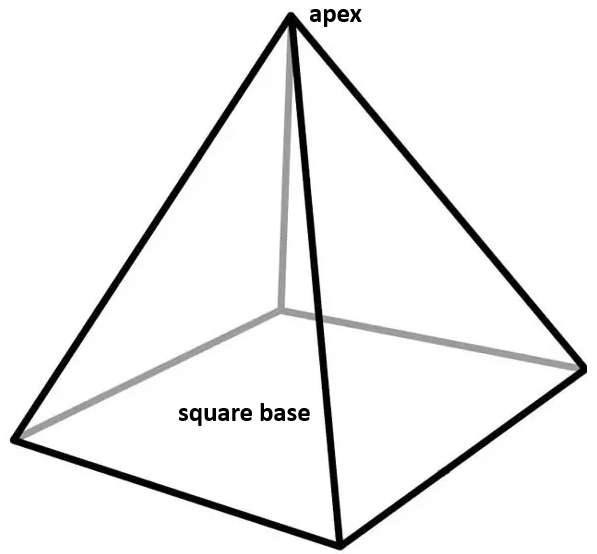
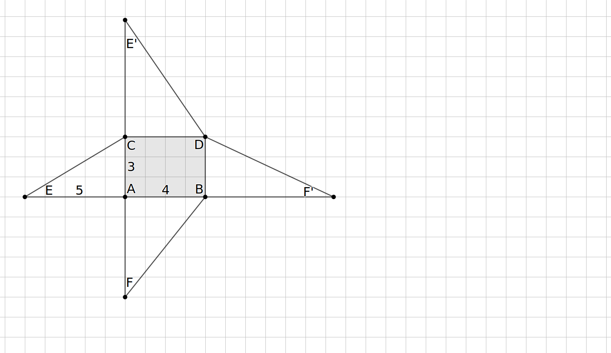
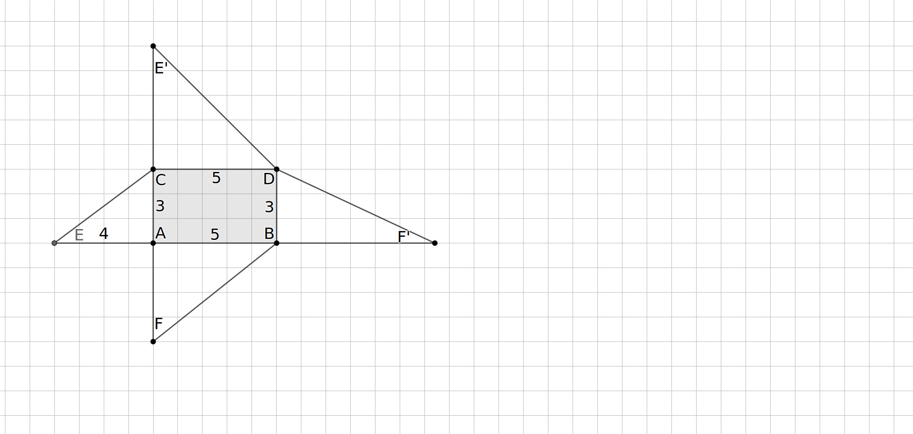
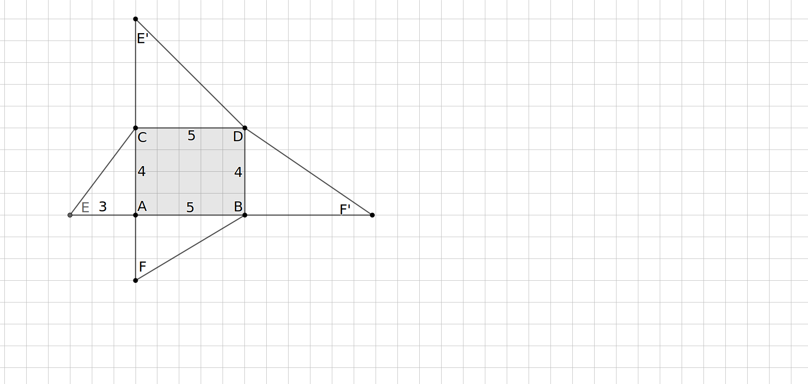
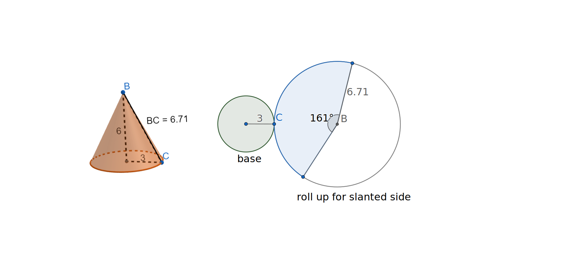

In this section, we will learn about pyramids and cones and how they are related to prisms and cylinders.
Definition3.4.1.Pyramid.
A pyramid is a polyhedron which may have any polygon as its base but the all remaining faces are triangles that come together at a common vertex called the apex. The height of the pyramid is measured from the apex to the plane containing the base along a line perpendicular to this plane.
We name each pyramid according to its base. Thus, a triangular pyramid has a triangular base, a square pyramid has a square base, and so forth. Also, the apex of the pyramid need not be directly above the center of the base; in fact, the apex may not be directly above any part of the pyramid.

Figure3.4.2.A square pyramid
Subsection3.4.2Patterns with Pyramids
Exploration3.4.1.
(a)
Use models and reasoning to complete Table 3.4.3. Pictures of a pentagonal pyramid and a hexagonal pyramid are provided in Figure 3.4.4.
Table3.4.3.Counting Parts of a Pyramid
Type of Pyramid
\(F=\) Number of faces
\(V=\) Number of vertices
\(E=\) Number of edges
Triangular pyramid
4
4
6
Quadrilateral pyramid
Pentagonal pyramid
Hexagonal pyramid
\(n\)-gonal pyramid
(b)
What appears to be true about \(F+V-E\) for each pyramid?
Subsection3.4.3Measuring Pyramids
In Exploration 3.4.2, we shall compute measurements for a specific example, a pyramid with a rectangular base and three perpendicular edges meeting at vertex \(A\text{.}\) If this exploration is done in class, your instructor may choose to assign different pyramids to different groups. If this is the case, you will want to construct your pyramid very carefully so that your pyramid can be assembled with other groups’ pyramids to form a new, yet familiar, solid. Then we will be able to use this construction to compute volume.
Exploration3.4.2.Exploring a Rectangular Pyramid.
In this activity, you will study the rectangular pyramid that is created by folding only one of the nets in Figure 3.4.5. Check with your instructor to see which net you should explore.
(a)Pyramid Net 1
(b)Pyramid Net 2
(c)Pyramid Net 3
Figure3.4.5.Nets of three rectangular pyramids
(a)Finding Edge Lengths and Surface Area.
Regardless of which Pyramid Net you are working wih, \(ABCD\) is a rectangle. The pyramid formed by Pyramid Net 1, has a \(3\times 4\)-rectangular base, the one formed by Pyramid Net 2 a \(3\times 5\)-rectangular base, and the one formed by Pyramid Net 3 has a \(4\times 5\)-rectangular base. Angles \(\angle CAE\text{,}\)\(\angle BAF\text{,}\)\(\angle DCE'\text{,}\) and \(\angle DBF'\) are right angles and the length of \(AE\) is the remaining value of 5, 4, or 3 as indicated on the sketch. Determine the following:
(i)
For the record, state which Pyramid Net you will study: Net 1, Net 2, or Net 3.
(ii)
Determine \(AF\text{.}\)
(iii)
Determine \(EC\text{.}\)
Hint.
The Pythagorean Theorem should be used. If your answer is not a whole number (Net 1), leave the square root in your answer.
(iv)
Determine \(BF\text{.}\)
Hint.
If your answer is not a whole number, you should leave the square root in your answer. What happens when you take the square of a square root?
(v)
Explain without performing any calculations why \(CE'\) should equal \(CE\) and \(BF'\) should equal \(BF\text{.}\)
Hint.
Remember that the net should fold into a pyramid.
(vi)
Calculate \(DE'\) and \(DF'\text{.}\)
Hint.
Compute these separately and check that they are equal.
Leave the square root in your answer. What happens when you take the square of a square root?
(vii)
Use your knowledge of area of rectangles and triangles and the definition of surface area to determine the surface area of this rectangular pyramid.
(b)Constructing a pyramid from a net.
Print your Pyramid Net 1
To print out copies of all three nets, sized consistently, use bit.ly/3PyramidNets..
on cardstock, cut your net out, and fold along the dashed lines to see that this forms a rectangular pyramid.
What do you notice about the corner of your pyramid at \(A\text{?}\)
Subsubsection3.4.3.1Surface Area of Pyramids and Cones
With both prisms and pyramids, formulas exist to compute the surface area of some of the common types, but these formulas are often not necessary. 2
The tough part of computing surface area is determining missing lengths and altitudes. Some formulas will alleviate the need to perform these computations.
Some of these formulas use techniques that are beyond the scope of this course. However, if we can compute the area of each face, then the surface area is simply the sum of the areas of the faces. Working with nets can help us focus on measuring the surfaces.
As illustrated in Figure 3.4.6, the surface of a cone will consist of two parts, the circle that forms its base and a circular sector that forms the section connecting the apex to the base. In the net for the cone, the center of the circular sector corresponds to the apex of the cone and the radius of the sector corresponds to the slant height of the cone. This slant height is measured along a line segment from the apex to the edge of the base which meets the base at an angle less than 90 degrees.
The cone, pictured in Figure 3.4.6, has a circular base with radius 3 and a vertical height of 6. Using the Pythagorean Theorem, we know that the slant height is \(\sqrt{3^2+6^2}=\sqrt{45}\approx 6.71\text{.}\) The net for this cone consists of the radius-3 circular base and the shaded portion of the larger circle. The fact that the circumference of the base matches the curved edge of the sector enables us to find the central angle, approximately \(q=6.71\)of the sector. The process of finding the angle and area of the sector is left to an exercise.

Figure3.4.6.A cone and its net.
Subsubsection3.4.3.2Volume of Pyramids and Cones
We end this section by stating a fact that will allow us to find the volume of many pyramids and cones.
Fact3.4.7.Volume of a Pyramid and Cone.
The volume of a pyramid is one-third the volume of a prism with the same base and height. Thus, the volume of a pyramid is given by
where \(A_{base}\) is the area of the base and \(h\) is the height measured along a vertical line segment from the apex to the base.
Similarly the volume of a cone is one third the volume of a cylinder with the same base and height. Since the base of a cone or cylinder is a circle with area, \(A_{base}=\pi r^2\text{,}\) the formula for the volume of a cone can be written as
where \(r\) is the radius of the base and h is the vertical height when the cone is sitting on its base.
This fact may be something you choose to accept and use without further justification, but in case you have doubts, the remainder of this section provides several different ways to visualize this surprising fact. As you have already experienced, visualizing three-dimensional properties can be challenging. Use the activities or videos, that work best for you or is required by your instructor.
Exploration3.4.3.Visualizing Pyramid and Cone Volume with Water.
This is the simplest demonstration of the claim that the volume of a pyramid is one-third the volume of the corresponding prism, but to perform this task, a special set of containers are needed. These are available through educational material companies. This exploration can also be viewed in the YouTube video in Figure 3.4.8.
(a)
Typically, this set will contain two pyramids and prisms with the same base and height and one cone and cylinder with the same base and height. Fill the pyramid (or cone) with water and then pour the water into the prism (or cylinder) that has the same base and height. Repeat until the prism (or cylinder) is filled. What do you notice?
(b)
Repeat the previous experiment with any other pyramid/prism or cone/cylinder pairs you have available.
(c)
Does this prove that the formula works in all cases where a pyramid (or cone) has the same base and height as a prism (or cylinder)? What are some nice properties that the paired solids you used have that other prisms and pyramid pairs might not have? What are some other pyramid/prism pairs or cone/cylinder pairs that you would add to the set to make the argument more convincing?
Exploration3.4.4.Visualizing the Volume of a Rectangular Pyramid By Construction from Nets.
This demonstration of the volume formula for a pyramid uses the three nets created in Task 3.4.2.b. Because the nets are constructed using paper and tape, the ability to complete and comprehend this demonstration may depend on the quality of construction. It is essential that the scale of the three pyramids is consistent. The document bit.ly/3PyramidNets 4
displays all three nets with the same scale. Printing on stiffer tagboard is recommended.
(a)
Cut out each net and carefully assemble each into a pyramid with base \(ABDC\text{.}\)
(b)
Arrange the three pyramids so that the form a single rectangular prism. The faces will be \(3\times 4\)-, \(3\times 5\)-, and \(4\times 5\)-rectangles.
(c)
Compute the volume of the prism.
(d)
Each of the three pyramids has a different base. Determine the area of the base of the pyramid formed by folding
Pyramid Net 1
Pyramid Net 2
Pyramid Net 3
(e)
Use the formula \(V_{pyramid}=\frac{A_{base}\cdot d}{3}\) to compute the volume of the pyramid formed by
Pyramid Net 1
Pyramid Net 2
Pyramid Net 3
(f)
How does additivity of volume together with the computations in Task 3.4.4.c and Task 3.4.4.e help to confirm the formula for the volume of pyramid for this particular situation?
Bonus challenge: To what family of pyramids can we generalize this argument
Hint.
For the bonus, note that these pyramids had a particular shaped base and a special base angle.
Exploration3.4.5.Visualizing the Volume of a Rectangular Pyramid using a Geogebra Applet.
In this demonstration of the relationship between the volume formulas of prisms and pyramids, this GeoGebra applet, created 5
Golden, John, "Pyramids in Prism," GeoGebra Public Resources, CC-BY-SA, 2015. Slightly edited to delete questions and adjust the graphical views.
by John Golden, demonstrates how a \(3\times 4\times 5\)-rectangular prism into three rectangular pyramids. In this activity, the shapes are the same as in Exploration 3.4.4, but the prism is pulled apart rather than built. The applet allows us to change the dimensions of the prism and pyramids to help us see that the formula holds for prisms of other dimensions as well. A device with a larger screen is recommended.
(a)
Use the GeoGebra interactive Figure 3.4.9 to complete the tasks. Note that right angles and other features are often distorted when we view three-dimensional figures on paper or computer screen.
(i)
Verify that the blue rectangle shown on the left has the same dimensions as the base of the prism on the right. Do this by checking the coordinates on the graph.
Drag point \(B\text{,}\) the lower right corner of the rectangle in the left picture. What happens to the prism on the right?
Drag point \(C\text{,}\) the upper left corner of the rectangle in the left picture. How does this affect the prism on the right?
(ii)
Move the vertical slider on the far left to change the value of \(ht\text{.}\) How does this affect the prism on the right?
(iii)
Use the reset button (upper right corner of the left frame) to return the value of \(ht\) and the locations of \(B\) and \(C\) to their original setting.
Slowly move the top slider to pull the prism apart into pyramids, observing the process in the right frame.
(A)
When the slider is moved all the way to the right, there should be three pyramids visible in the right frame and three rectangles visible in the left frame.
Verify that the three rectangles on the left correspond to the bases of the three pyramids on the right. You may need to adjust your viewing window by zooming out or dragging. You can also see the coordinates of the vertices by right-clicking on the point. HOW DOES THIS WORK ON A MAC?
What are the dimensions of the base of the green prism, given by \(BB''D''D\text{?}\)
What are the dimensions of the base of the red prism, given by \(AA''B''B\text{?}\)
These explorations show that, at least in a few cases, the volume of a pyramid or cone is one-third that of the corresponding prism or cylinder. A proof of this fact for all situations is beyond the scope of this course.
Exercises3.4.4Exercises
Skills and Recall
1.
Determine the volumes of the following solids:
(a)
A pyramid with a \(9\times 9\)square base and a height of \(4\text{.}\)
(b)
A pyramid with a rectangular base with a length of \(3\text{,}\) a width of \(7\text{,}\) and a height of \(5\text{.}\)
(c)
A cone with height 15 cm and radius 10 cm.
(d)
A triangular pyramid with a distance of 10 cm from apex to base. The base is an isosceles triangle with sides 13 cm, 13 cm, and 10 cm. Since the base is isosceles, its altitude passes through the midpoint of the 10 cm side. This pyramid is sketched in Figure 3.4.10 and the lengths of the sides of the base are given.
2.
Determine the surface area of the solids:
(a)
The prism with an isosceles triangle base and stretch distance 10 cm where the triangle has one side of length 10 cm and two of length 13 cm.
The prism in Task 3.4.4.2.a and the pyramid in Task 3.4.4.2.b have the same height and base. Divide the two surface areas. Does there appear to be a nice relationship between the surface area of a pyramid and the surface area of the associated prism?
Hint.
Make sure that your calculator is showing four or more digits after the decimal point. Is the ratio you compute a nice number or an ugly number? Is it familiar to you?
Extending the Concepts
3.Angle and Area of a Sector.
The questions in this exercise refer to the cone in Figure 3.4.13 which has a circular base with radius 8 inches and a slant height of 17 inches.
(a)
Determine the area of the base of this cone.
(b)
Use the fact that the height of the cone is measured from the apex along a segment perpendicular to the base to determine the height of this cone.
(c)
Determine the volume of this cone.
(d)
Determine the circumference of the base.
Hint.
The base is a circle with radius 8. What is the formula for the circumference? Also, if you leave the constant \(\pi\) in your answer, it will simplify your work in a later problem.
(e)
A possible net for the cone is given in Figure 3.4.14. The distance from \(B\) to \(B'\) along the circular arc, known as the arclength, should equal the distance around the circumference of the base.
(i)
What is the total circumference of a circle with radius 17 inches?
Hint.
Again, you are encouraged to leave the number \(\pi\) in your answer.
(ii)
What fraction of this circumference should the arclength from \(B\) to \(B'\) be?
Hint.
The number \(\pi\) should cancel, leaving you with a fraction where the numerator and denominator are whole numbers. Do they look familiar?
(iii)
What is the rotational angle of a full circle? Use this together with the fraction you just computed to determine the measure of \(\angle{BDB'}\text{.}\)
Hint.
This figure only shows a rough approximation of the location of \(B'\text{.}\) Do not use a protractor.
(iv)
Determine the area of the sector of circle \(D\) from \(B\) to \(B'\text{.}\)
(v)
Determine the surface area of the cone with radius 8 inches and slant height 17 inches.
(vi)
What did you learn by doing this exercise? Did you observe anything that you think would make a good conjecture for cones in general?